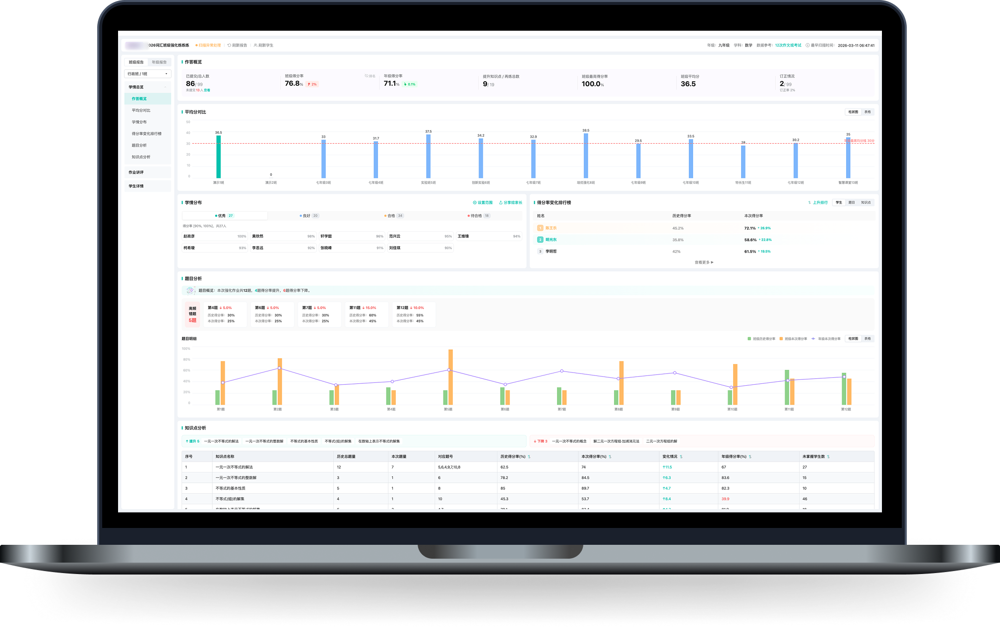
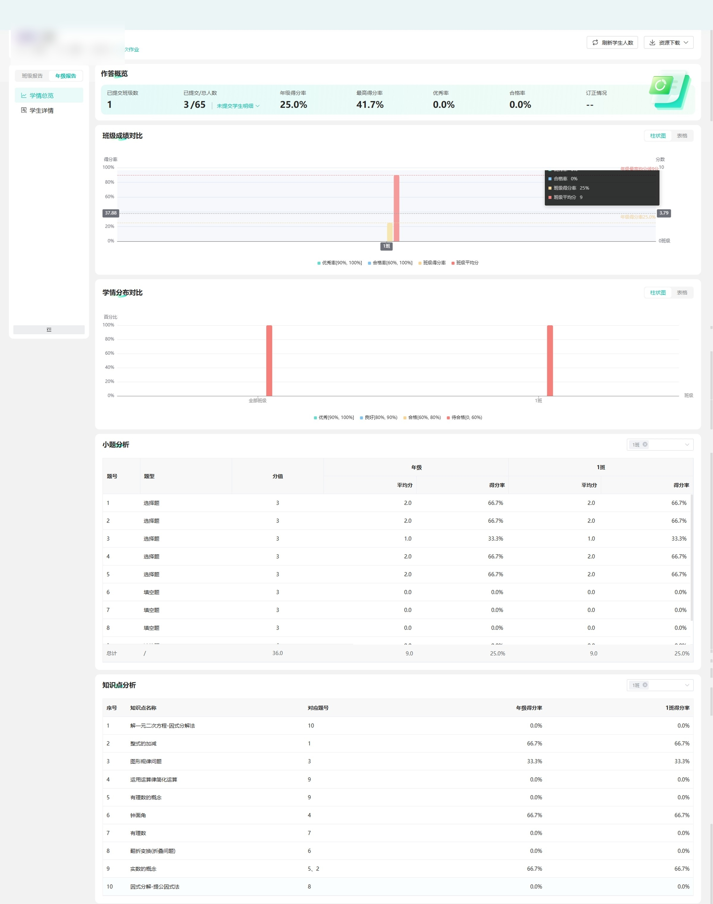
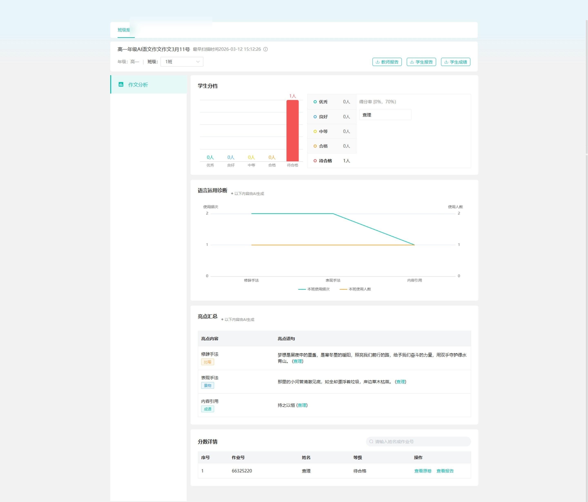
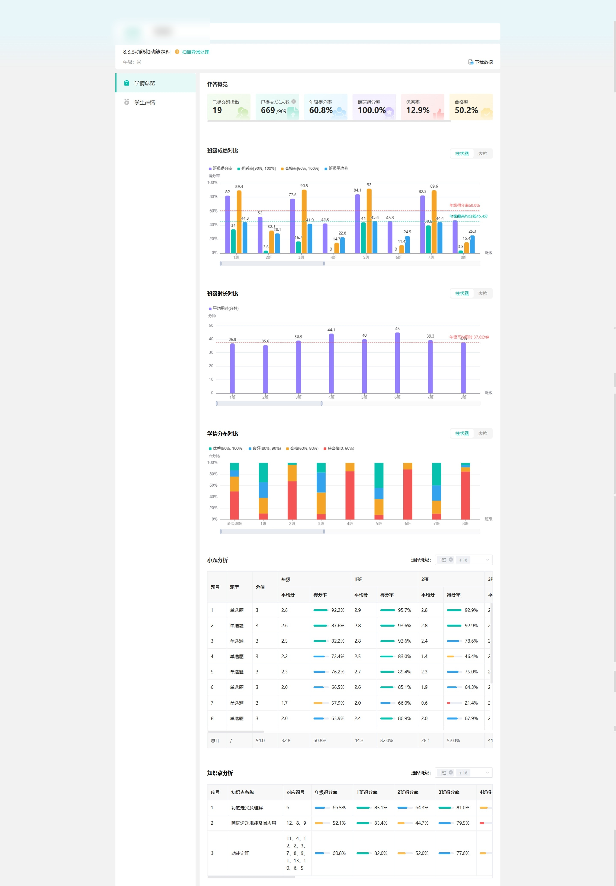
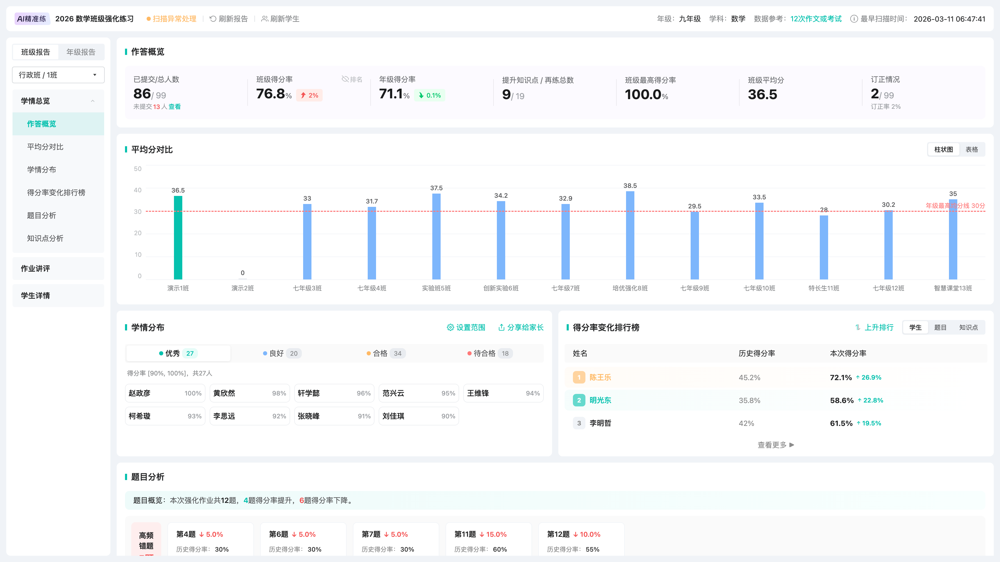
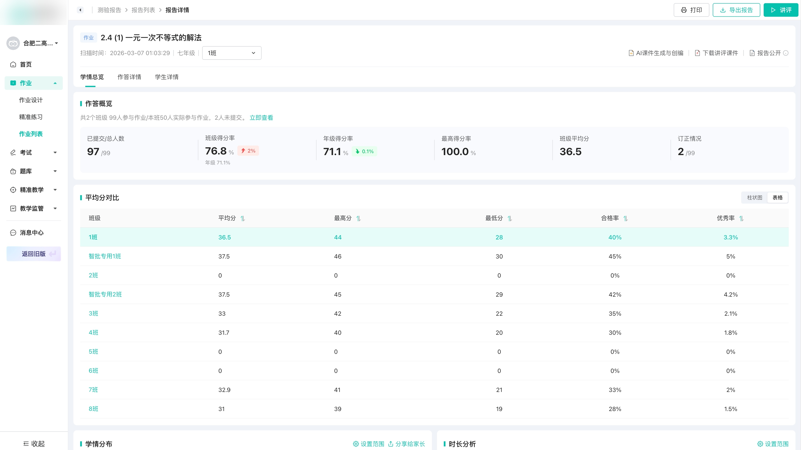
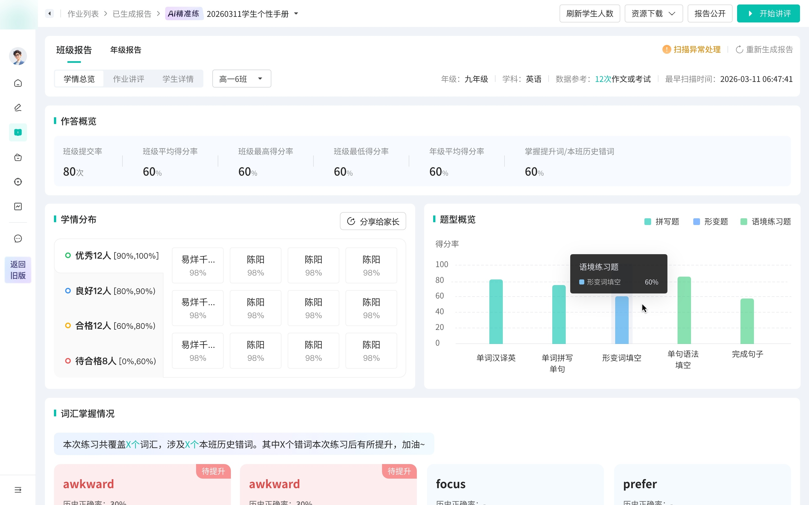
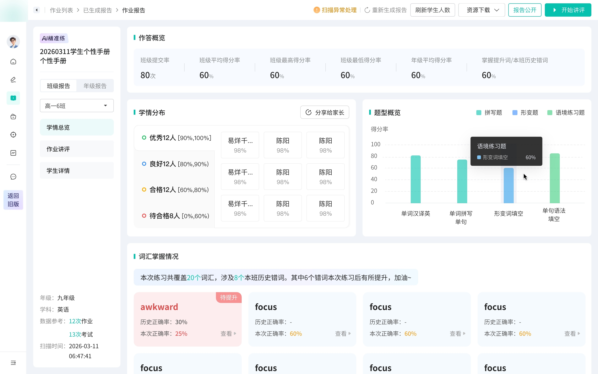
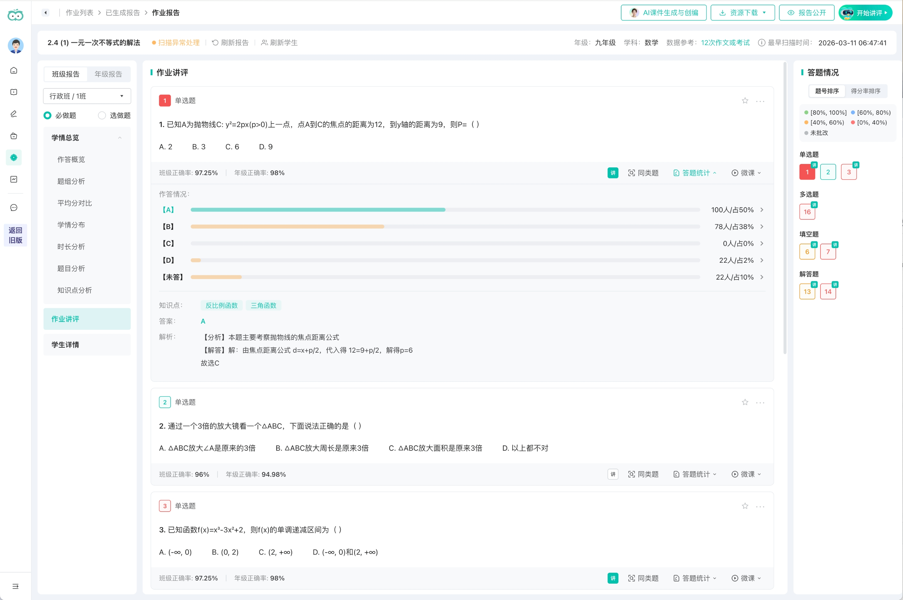
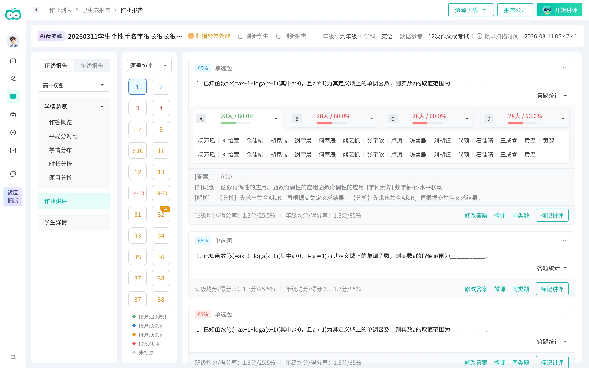

Report navigation报告导航
One local structure holds overview, review, class / grade views, and student details.以一套局部结构承载总览、讲评、班级 / 年级视角与学生详情。
Redesigned report lists, analytics pages, and classroom review flows into one reusable framework, with AI-assisted demos for faster product-engineering alignment. 将分散的报告列表、学情分析页与课堂讲评流程收敛为一套可复用框架，并以 AI 辅助 demo 加快产研对齐。

I noticed this in daily use, and it kept surfacing in support complaints: when an admin teacher revised an answer key, every report tied to that exam needed updating — but finding those reports across a sea of separately-built lists was slow and easy to miss. That was one symptom of a bigger gap: teachers relearning a different layout for every report type. 这是我在日常使用中注意到、客诉里也反复出现的问题：管理员教师修订答案后，该试卷涉及的每份报告都需要更新，但要在一堆各自实现的报告列表里找出它们，既慢又容易漏。这只是更大问题的一个症状——教师要为每种报告重新熟悉一套不同的界面。
After raising it with product, we made it a project — a redesign that started before the report page itself, unifying how each type is listed, opened, drafted, and recovered so teachers work through one set of rules. 我把它提给产品后立了项：一次从报告详情页之前就开始的重构，统一每种报告的列表、进入、草稿与回收，让教师用同一套规则完成工作。
Teacher scenario教师使用路径Teachers needed one predictable path from report entry to analysis and action: find the right report, switch class or grade views, read performance signals, then prepare review or diagnose student issues.教师需要一条稳定且可预期的路径：定位对应报告，进入班级或年级视角，查看表现与薄弱点，再进入讲评备课或学生问题诊断。
Before unifying anything, I audited the workflow feature by feature — the same action behaved differently across types: exception handling showed a button on some reports and nothing on others, downloads varied in items and naming, answer-distribution panels expanded in different places. Three patterns fell out — fragmented entry points, inconsistent detail structures, and repeated design and build work for every type:动手统一之前，我先逐功能做了一次差异审计 —— 同一个动作在不同报告里各做一套：扫描异常有的报告有按钮、有的没有，下载项和命名不一致，答题分布的展开位置也各不相同。归纳出三类问题 —— 入口割裂、详情结构不一、以及每类都要重复设计与落地：



At scale规模背景Report reading and classroom review are high-frequency, platform-wide tasks: over this term (Mar–Jun 2026), 17,538 teachers across 1,795 schools opened these reports, and the review path drew 20,962 teachers back about 20× each. The fragmentation was not a corner case.看报告与课堂讲评是高频、覆盖全平台的任务：本学期（2026.3–6），17,538 名教师、覆盖 1,795 所学校查看这些报告，讲评路径触达 20,962 名教师、人均约 20 次。割裂并非个例。
The selected framework unified the path around the report — find, enter, navigate, act — while leaving each report’s modules free to differ. Get that line wrong and 8+ report types, each split across class and grade views, lock into one rigid structure. 最终框架统一的是报告的外层路径 —— 查找、进入、导航、操作 —— 同时让各报告的模块保持差异。由于这套外层要同时支撑 8+ 种报告（每种再分班级 / 年级两层），边界一旦界定不当，后续扩展都会受制于它。

Tradeoff代价extra upfront structure: the shared shell needed clearer local navigation rules, but it made later report types easier to extend.前期结构定义更重，共用外壳需要更清晰的局部导航规则，但后续报告更容易扩展。
One local structure holds overview, review, class / grade views, and student details.以一套局部结构承载总览、讲评、班级 / 年级视角与学生详情。
Export, sharing, and review entry points stay centralized across report types.导出、分享与讲评入口在不同报告中保持集中。
Analytics, question types, and review content can vary inside the shared framework.分析、题型与讲评内容仍可在共用框架内变化。
I evaluated each direction against three requirements: report-task focus, clear internal report navigation, and enough space for analytics and review. 我以三条要求评估每个方向：报告任务是否聚焦、报告内部导航是否清晰、分析与讲评空间是否足够。

Explored 01探索 01Too close to the legacy structure; report-task focus remained diluted.过于延续旧结构，报告任务聚焦不足。

Explored 02探索 02Fit the new shell, but internal report navigation remained underdefined.贴合新版外壳，但报告内部导航仍不够清晰。

Explored 03探索 03Clarified metadata, but compressed analytics and review space.元信息更集中，但压缩了分析与讲评空间。
I split the work by decision risk: the higher the cost of a wrong call, the less I let AI decide. 我按决策风险拆分工作：判断失误的代价越高，越不交给 AI。
AI handled the routine pages — list states, and the report IA inside a structure I set first.常规页面交由 AI —— 列表页、状态页，以及在我预先确定的结构内的报告 IA。
The classroom review is where design judgment had to lead.课堂讲评，是设计判断必须主导之处。
It decides how a teacher runs the lesson — not something to hand off. Iterating with AI also trapped me inside what it could already produce; turning it off was how I kept room to diverge.它决定教师如何组织这堂讲评 —— 不应交由 AI 代劳。而且反复借助 AI 迭代，思路容易被局限在它已能产出的范围之内；暂时停用，是为了保留发散思考的空间。
Field research实地调研I’d designed the review page for lesson prep, but visiting schools I found many teachers run the review live in class from this very page. That raised the bar: it had to support teaching a lesson, not just reading like a report.讲评页原本按“备课”场景设计，但入校走访发现，不少教师直接用这一页在课堂上讲评。这把设计要求抬高了：它要支撑教师上课，而非仅作报告供阅读。


Reusable components were cleaned by hand, then written back to the design library through an MCP-based workflow — and the branch and API changes were handed to engineering.可复用组件经人工清理后，再经由基于 MCP 的流程回写至设计库；分支与接口改动随后交付研发。
The result was structural, and the reuse is concrete, not aspirational: empty and loading states are no longer drawn per report — they reuse one shared set from the codebase; and components built while prototyping are written back to the design library through an MCP workflow, so the next report type starts from a fuller kit, not a blank page. 结果是结构性的，且复用切实可见、并非口号：空状态与加载态不再为每种报告单独绘制，而是复用代码仓中的同一套；在 demo 中新建的组件又经 MCP 流程回写至设计库 —— 后续报告可基于更完整的组件库展开，无需从零开始。
On delivery交付侧Reuse showed up in the build: design-to-page generation ran about 15% faster, the AI-generated pages needed few manual fixes, and engineering maintains one code base instead of one per report type.复用在交付中见效：设计到页面的生成效率约提升 15%，AI 生成的页面可用度高、需人工调整之处很少，研发也从「每类报告各维护一套代码」转为维护同一套。
Reading the numbers数据解读Report views rose sharply after launch (PV +104%, April → May), and each teacher came back more often (4.8 → 5.6 views). Part of that is the rollout — the user base nearly doubled — and May is exam season, so I don’t claim a clean redesign effect. But views outpaced even that user growth, which says the unified flow is getting used, not just reached.上线后报告查看量大幅上升（PV +104%，4→5 月），每位教师的查看频次也由 4.8 升至 5.6。其中一部分来自放量——用户规模接近翻倍，加之 5 月正值考试季，因此我并不声称这是改版的单独效果。但报告查看的增幅超过了用户规模的增长，说明统一后的流程是被真正使用，而非仅被触达。
Reading the risk风险研判A structural redesign’s usual cost is relearning, so the signal I watched was friction: satisfaction and NPS held flat and return-to-old stayed ~37%. The change landed without a spike — a modest signal, but for this kind of work the one that matters.结构性改版最常见的代价是让用户重新学习，因此我重点关注的是摩擦：满意度与 NPS 保持持平、返回旧版率稳定在 ~37%。这次大改并未引发摩擦上升——这是个温和的信号，但对这类工作而言恰是最该看的那一个。
What I’d do differently复盘Early on I hadn’t balanced fast delivery against high fidelity, and a stretch of work went the wrong way before I set the rule — stabilize the framework first, fill content second, keep a hand-drawn fallback for the hardest pages. The redesign also still needs real validation: the signal to watch is how teachers migrate to the new framework, not the absence of complaints.项目初期未能先对齐“快速交付”与“高完成度”，中途出现过偏差；此后我将其收敛为一条原则 —— 先稳定框架，再填充内容，最难的页面保留一份手绘稿兜底。此次改版也仍需真正验证：真正应关注的是教师在新框架下的迁移与使用情况，而非“无投诉”。
The real design decision was not whether to use AI. It was deciding what to hand off, what to unify, and what needed to stay in the designer’s hands.真正的设计判断不在于是否使用 AI，而在于：哪些可以交付出去、哪些需要统一、哪些必须留在设计师手中。